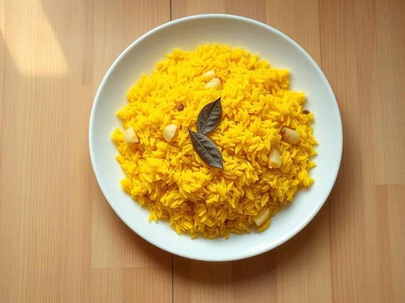

Рис с куркумой и чесноком
Рассыпчатый жёлтый рис с луком, чесноком и куркумой на сковороде
30 мин4 порц.310 ккал на порциюБ 6 · Ж 5 · У 63Интернациональная кухня
Открыть в приложении: порции, таймеры, список покупок
Продукты на 4 порц.
- Рис1,5 стак.
- Вода3 стак.
- Сливочное масло20 г
- Лук репчатый1 шт
- Чеснок1 зуб.
- Куркума1 ч. л.
- Соль1 ч. л.
- Лавровый лист1 шт
Как готовить
- Промойте длиннозёрный рис в нескольких водах, пока вода не станет прозрачной, и дайте стечь.
- Растопите масло в сотейнике на среднем огне, обжарьте мелко нарезанный лук 3 минуты до мягкости, добавьте чеснок и куркуму на 30 секунд.
- Всыпьте рис и обжаривайте 2 минуты, помешивая, чтобы каждое зерно покрылось маслом.
- Влейте горячую воду, посолите, положите лавровый лист. Доведите до кипения на сильном огне.
- Убавьте огонь до слабого, накройте крышкой и варите 15 минут, пока вода полностью не впитается.
- Снимите с огня и оставьте под крышкой ещё на 5 минут, затем разрыхлите вилкой и достаньте лавровый лист.
Совет. Не поднимайте крышку во время варки, иначе уйдёт пар и рис сварится неравномерно.